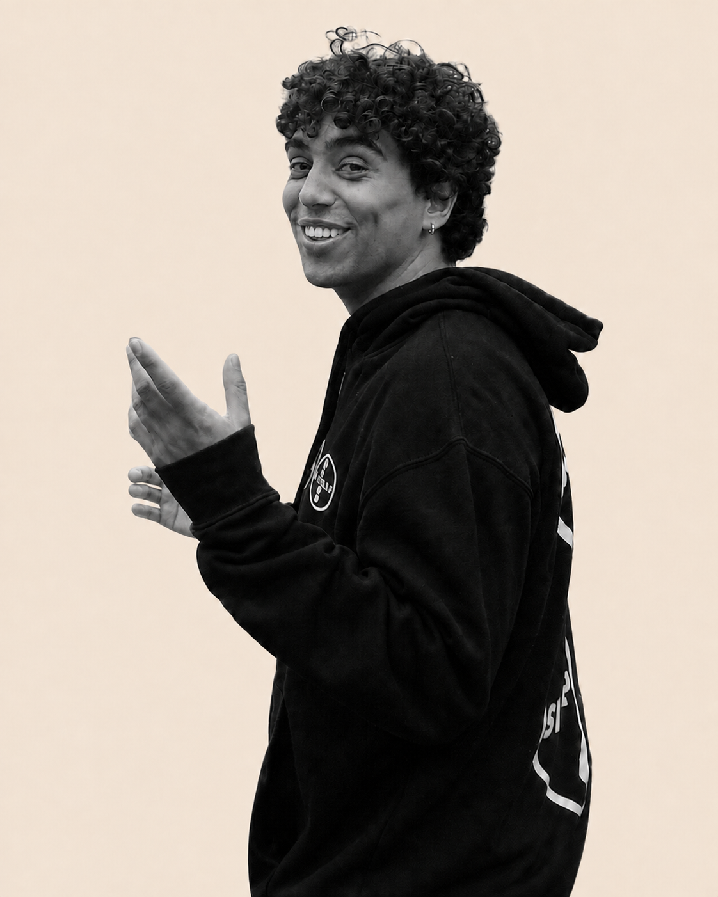

Karim Abdel Sadek
I am a second-year CS PhD student at UC Berkeley. I am lucky to be advised by Stuart Russell and to be part of CHAI and BAIR. My work is partially supported by the Cooperative AI PhD Fellowship.
I am broadly interested in Reinforcement Learning, Cooperative AI, and AI Safety. I aspire for my work to be a mix of theory and practice, with the goal of designing methods which are both well-founded and that have the potential to scale empirically.
I completed my BSc in Mathematics and Computer Science at Bocconi University, where I worked on online learning with Marek Eliáš. Afterwards, I completed my MSc in AI at the University of Amsterdam. Before embarking on my PhD, I spent time at Georgia Tech, at the University of Cambridge (with David Krueger and Michael Dennis), and at UC Berkeley (with Micah Carroll).
Please reach out if you are interested in my research, want to chat, or have anything else in mind! You can e-mail me at karimabdel at berkeley dot edu.
If you are an undergrad interested in getting involved in research, please read this.